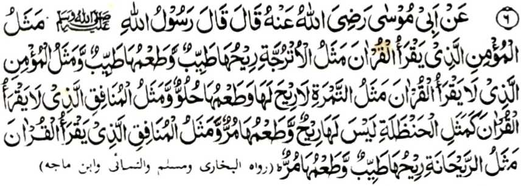

Miyakathitayan ko Abu Mosa (Radhiallaho ‘Anho) a pitharo iyan a pitharo o Rasulollah (Sallallaho ‘Alaihi wa Sallam):
- “Aya ibarat o Mo’min a pembatiya-an niyan so Qur’an na lagid o darangita a mamot ago mamis;
- go aya ibarat o Mo’min a di niyan mbatiya-an so Qur’an na lagid o korma a da-a bao niyan ogaid na mamis,
- go aya ibarat o Munafiq a di niyan mbatiya-an so Qur’an na lagid o ogo [phagetho’ sa kilid a kalasan a lagid sa paraas o obi] a da-a bao niyan ago mapenedi ta-am;
- go aya ibarat o Munafiq a pembatiya-an niyan so Qur’an na lagid o Raihan (obarobar) a mamot ogaid na mapa-it-i ta-am.”
Si-i sangka-iya a Hadith na iniropa-on so kalbihan o kapembatiya-a ko Qur’an, sa ini-ibarat ko pekha-ilay a nganin ka aden miropa so mbida-bida-an o kabatiya ago so di kabatiya-a ko Qur’an. Aya mata-an na giyangka-iya a manga nganin si-i sangka-iya donya lagid o darangita o di na korma na di niyan khalagid so kamot ago kamis o Qur’an.
Aden baden a masasalebo a zaboten sangka-iya manga ibarat, a mitotoro iyan so kadalem-i panarima o manga Nabi go miyatanto ko kaolad o sabot o Rasulollah (Sallallaho ‘Alaihi wa Sallam). Ilain tano so ibarat o darangita, a mapiya-i ta-am ko ngari, pephakasoti ko soled a tiyan ago mapephakalebod iyan so kapheliyo o Najis. Giya-i mapepento a kalbihan o kapembatiya-a ko Qur’an sabap sa so kapiya o sengao, so kasosoti o masolen ago so kabager o niyawa na aya onga o kabatiya sa Qur’an.
Miya-aloy pen a opama aden a darangita ko walay, na da-a phakasoledon a Jinn [a marata]. Opama ka benara-i na giyanan den-i kalbihan o Qur’an. So manga doctor na pitharo iran a so darangita na pekhabager iyan so kapiya o tanod ago miya-aloy si-i ko kitab a ‘Ihya’ a so Ali (Radhiallaho ‘Anho) na pitharo iyan a telo a nganin a mapephakabager iran so tanod, ma-ana:
Si-i ko kitab o Abu Daud, na miya-aloy ron si-i ko kaposan angka-iya miya-aloy a Hadith a aya mapiya ipephagonota na so padagang sa Misk (kastori). Apiya da ka makakowa sa mamot, ogaid na kiyanggona-an ka so kamot iyan.
Somarata a onota na lagid o kaobay ko tolang, a so obay niyan, na apiya da maka-item ogaid na da niyan kalidasi so bel iyan. Giyoto-i sabap a tanto den a paliyogat so kamapili o tao sa onota iyan, a siran so lalayon niyan gi-i mipelomameka.